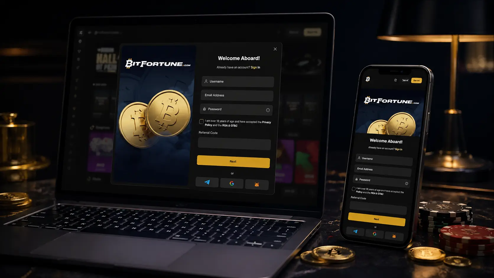

The registration page is designed for visitors who want a clear explanation of the account setup process before they create a Bitfortune profile. Registration is not only a form with an email and password; it is the start of the relationship between the user, the casino account, verification rules, payment access, bonuses and safer gambling tools. This guide explains what should be reviewed before submitting details, why accurate information matters, how login security should be handled, and why bonus offers should not be accepted without reading the terms. It gives the page a distinct purpose instead of repeating general homepage copy.

Before creating a Bitfortune account, a visitor should confirm that they are allowed to use the service in their location, that they meet the age requirements, and that they understand the basic account rules. It is also sensible to read privacy information, cookies information and responsible gambling guidance before entering personal details. Registration should never be rushed because inaccurate information can create problems later during verification or withdrawal checks. A careful user will also decide whether they actually need an account at that moment, rather than signing up only because a bonus banner looks attractive. This page presents registration as a controlled process.
Registration forms usually ask for details that must match the user identity, payment method and possible verification documents. A Bitfortune visitor should enter the name, email, date of birth, address details and password carefully, depending on what the form requires. Small mistakes can become larger issues if the account later needs document review. The user should also choose a strong password and should avoid reusing credentials from other websites. A form may look simple, but it connects to security, payments and compliance. This is why a dedicated registration page should explain the importance of accuracy instead of treating signup as a one-click action.
This supporting image area is reserved for a page-specific illustration that matches the Bitfortune visual style while making this landing page feel independent from the homepage and from the other internal pages. The image should not contain written text, logos, licence claims or copied interface elements. It should work as a decorative casino-themed visual that supports the subject of this page and keeps the layout balanced between long informational blocks. The file can stay as a temporary missing asset until the final WebP is generated and placed in the img folder with the exact filename shown in the source path.
Verification can be required before withdrawals, after certain account activity or when the casino needs to confirm identity, age, address or payment ownership. Bitfortune users should be prepared for this possibility and should not assume that account creation alone completes every requirement. Documents must normally be readable, current and consistent with the account details. If verification is requested, the user should follow instructions inside the official account area and avoid sending sensitive documents through unofficial channels. A clear explanation of verification helps visitors understand that checks are part of account safety and regulatory control, not a separate bonus condition.
Login security should be considered from the first day of account creation. A Bitfortune player should keep the password private, avoid shared devices where possible, log out after use, and be cautious with messages that claim to offer special access outside the official site. If the account supports additional security tools, the user should consider enabling them. The registration page should also remind visitors that casino accounts can contain personal data, payment history and active balance, so account protection matters even before any game is played. Good security habits reduce the chance of avoidable problems later.
After registration, the user should not move immediately into high-stakes play. A better path is to review the account area, check available limits, read bonus conditions, confirm payment options and understand how support can be contacted. Bitfortune visitors should also decide whether they want to use a welcome offer or play without a bonus, because the choice can affect wagering requirements and withdrawal conditions. The first session should be moderate and deliberate. This final block makes the page more complete by connecting signup to the broader account experience instead of ending the guide at the moment the form is submitted.